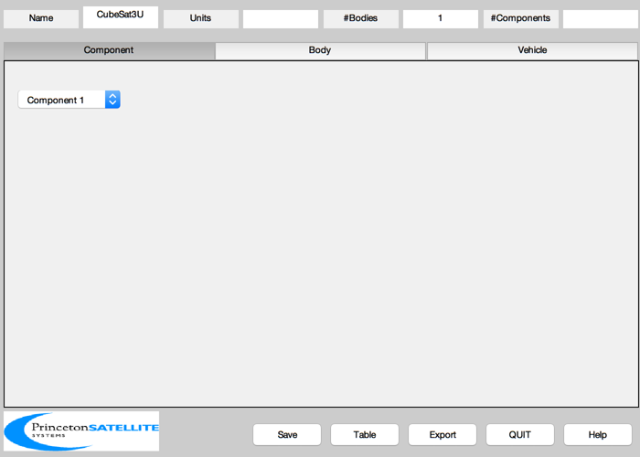
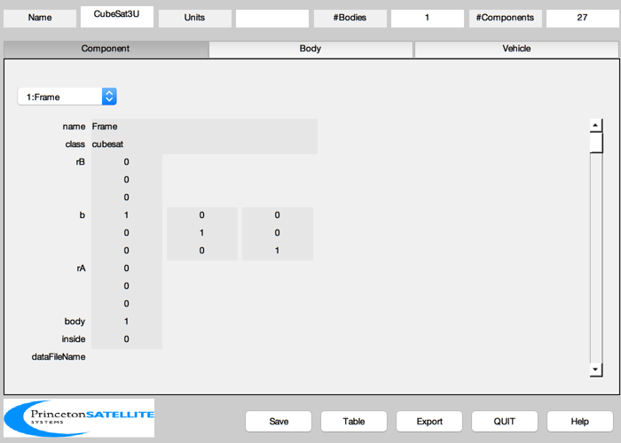
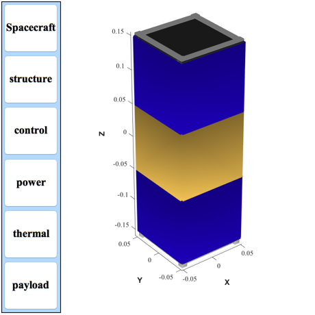

Build a 3U Cubesat using AddCubesatComponent
Constructs a Cubesat with various components: Frame, Circuit Boards, reaction wheels, magnetic torquers, camera components, and battery.
Since version 10. ------------------------------------------------------------------------- See also: AddCubesatComponent -------------------------------------------------------------------------
Contents
%-------------------------------------------------------------------------- % Copyright (c) 2010 Princeton Satellite Systems, Inc. % All Rights Reserved %--------------------------------------------------------------------------
Initialize
-----------
AddCubesatComponent( 'CubeSat3U' );
 Data
-----
% The board positions only have 1 number because they fill the xy space %---------------------------------------------------------------------- cPUBoardPosition = 03; % mm iOBoardPosition = 10; % mm sBandBoardPosition = 20; % mm % Everything else needs a vector %------------------------------- rwaXPosition = [ -5;-25; 110]; % mm rwaYPosition = [ 25;-5; 110]; % mm rwaZPosition = [ 0; 10; 90]; % mm torquerXPosition = [ 0; 45;-100]; % mm torquerYPosition = [ 45; 0;-100]; % mm cameraXPosition = [ -50; 15; 0]; % mm cameraYPosition = [ -10; 25; 0]; % mm % These numbers are temporary %---------------------------- cPUBoardPower = 1; % W iOBoardPower = 1; % W sDRAMBoardPower = 1; % W sBandBoardPower = 1; % W rWAPower = 1; % W torquerPower = 0.5; % W cameraPower = 0.1; % W cameraElectronicsPower = 0.2; % W cameraMass = 0.1; % kg cameraElectronicsMass = 0.1; % kg cameraBoxDim = [20 20 20]; % mm cameraBoxPosition = [-10; 3.1; 0]; % mm batteryPower = 100.1; % W batteryMass = 0.1; % kg batteryBoxDim = [ 20 20 40]; % mm batteryBoxPosition = [-10; 15;-140]; % mm % This is the dipole moment we get when we energize the coil %----------------------------------------------------------- torqueRodDipole = 10; % ATM^2 (Amp-turns-m^2) % Sizes of devices %----------------- rWADim = [20 40]; % mm (radius, height) torquerXDim = [5 5 90]; % mm (torquer long axis is z) torquerYDim = [5 5 90]; % mm (torquer long axis is z)
Add Components to the CubeSat
------------------------------
AddCubesatComponent( 'device', 'frame', 'name', 'Frame', 'subtype', '3U' ) AddCubesatComponent( 'device', 'board', 'name', 'CPU', 'position', cPUBoardPosition, 'power', cPUBoardPower ) AddCubesatComponent( 'device', 'board', 'name', 'I/O', 'position', iOBoardPosition, 'power', iOBoardPower ) AddCubesatComponent( 'device', 'board', 'name', 'S Band', 'position', sBandBoardPosition, 'power', sBandBoardPower ) AddCubesatComponent( 'device', 'reaction wheel', 'name', 'RWA X', 'position', rwaXPosition, 'power', rWAPower, 'unit vector', [1;0;0], 'dimensions', rWADim ) AddCubesatComponent( 'device', 'reaction wheel', 'name', 'RWA Y', 'position', rwaYPosition, 'power', rWAPower, 'unit vector', [0;1;0], 'dimensions', rWADim ) AddCubesatComponent( 'device', 'reaction wheel', 'name', 'RWA Z', 'position', rwaZPosition, 'power', rWAPower, 'unit vector', [0;0;1], 'dimensions', rWADim ) AddCubesatComponent( 'device', 'torquer', 'name', 'Torquer X', 'position', torquerXPosition, 'power', torquerPower, 'unit vector', [1;0;0], 'dipole', torqueRodDipole, 'dimensions', torquerXDim ) AddCubesatComponent( 'device', 'torquer', 'name', 'Torquer Y', 'position', torquerYPosition, 'power', torquerPower, 'unit vector', [0;1;0], 'dipole', torqueRodDipole, 'dimensions', torquerYDim ) AddCubesatComponent( 'device', 'camera', 'name', 'Camera X', 'position', cameraXPosition, 'power', cameraPower, 'boresight', [1;0;0], 'mass', cameraMass ) AddCubesatComponent( 'device', 'camera', 'name', 'Camera Y', 'position', cameraYPosition, 'power', cameraPower, 'boresight', [0;1;0], 'mass', cameraMass ) AddCubesatComponent( 'device', 'box', 'name', 'Camera Electronics', 'position', cameraBoxPosition, 'power', cameraElectronicsPower , 'mass', cameraElectronicsMass, 'dimensions', cameraBoxDim ) AddCubesatComponent( 'device', 'box', 'name', 'Battery', 'position', batteryBoxPosition, 'power', batteryPower , 'mass', batteryMass, 'dimensions', batteryBoxDim ) % We'll use loops for the remaining components because they are mostly the same %-------------------------------------------------------------------------- % Enter the positions and unit vectors for the solar panels %---------------------------------------------------------- position = [ 50 0 -50 0 50 0 -50 0;... 0 50 0 -50 0 50 0 -50;... 100 100 100 100 -100 -100 -100 -100]; % mm u = [1 0 -1 0 1 0 -1 0;... 0 1 0 -1 0 1 0 -1;... 0 0 0 0 0 0 0 0]; for k = 1:8 name = sprintf('Solar Panel %d',k); AddCubesatComponent( 'device', 'solar panel', 'name', name,... 'position', position(:,k), 'outward normal', u(:,k), 'dimensions', [100 100] ) end % Put the positions and unit vectors for the gold foil %----------------------------------------------------- position = [ 50 0 -50 0;... 0 50 0 -50;... 0 0 0 0]; % mm u = [ 1 0 -1 0 ;... 0 1 0 -1 ;... 0 0 0 0 ]; for k = 1:4 name = sprintf('Foil Panel %d',k); AddCubesatComponent( 'device', 'gold foil', 'name', name,... 'position', position(:,k), 'outward normal', u(:,k), 'dimensions', [100 100] ) end % Put the positions and unit vectors for the radiator %---------------------------------------------------- position = [ 0 0;0 0;-150 150]; % mm u = [0 0;0 0;-1 1]; for k = 1:2 name = sprintf('Radiator %d',k); AddCubesatComponent( 'device', 'radiator', 'name', name, 'position', position(:,k), 'outward normal', u(:,k), 'dimensions', [100 100] ) end
Add subsystems
---------------
BuildCADModel( 'add subsystem', 'structure', {'frame' 'foil'} ); BuildCADModel( 'add subsystem', 'control',{'rwa' 'torquer'} ); BuildCADModel( 'add subsystem', 'power', {'solar panel','battery'} ); BuildCADModel( 'add subsystem', 'thermal', {'radiator'} ); BuildCADModel( 'add subsystem', 'payload', {'camera'} );
Update and show the model
-------------------------
BuildCADModel( 'update body mass properties' ); h = BuildCADModel( 'get model'); CreateReport( h, 'txt', [], 'mass', 1 ) BuildCADModel('show spacecraft'); g = BuildCADModel( 'get cad model' ); SaveStructure( g, 'CubeSat3U' ) %--------------------------------------
Component Mass Units
Structure subsystem
Control subsystem
Power subsystem
Battery 0.1 kg
Power Subsystem Total 0.1 kg
Thermal subsystem
Payload subsystem
Camera X 0.1 kg
Camera Y 0.1 kg
Camera Electronics 0.1 kg
Payload Subsystem Total 0.3 kg
Miscellaneous subsystem
Total 0.4 kg
